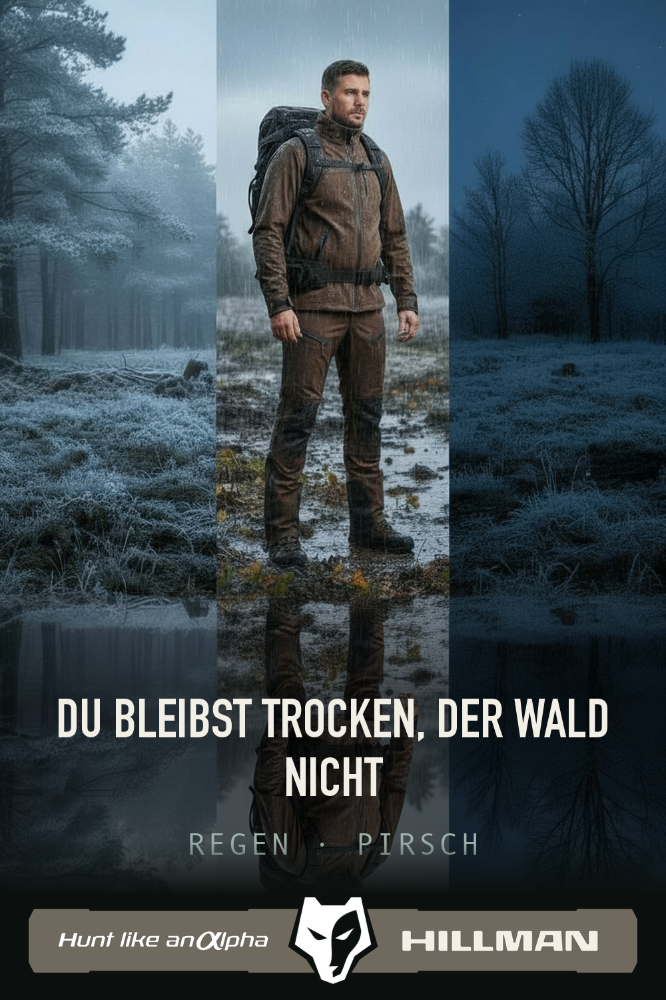
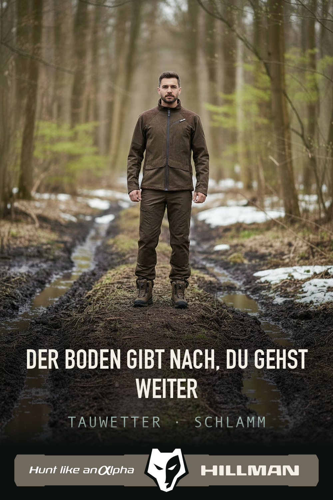
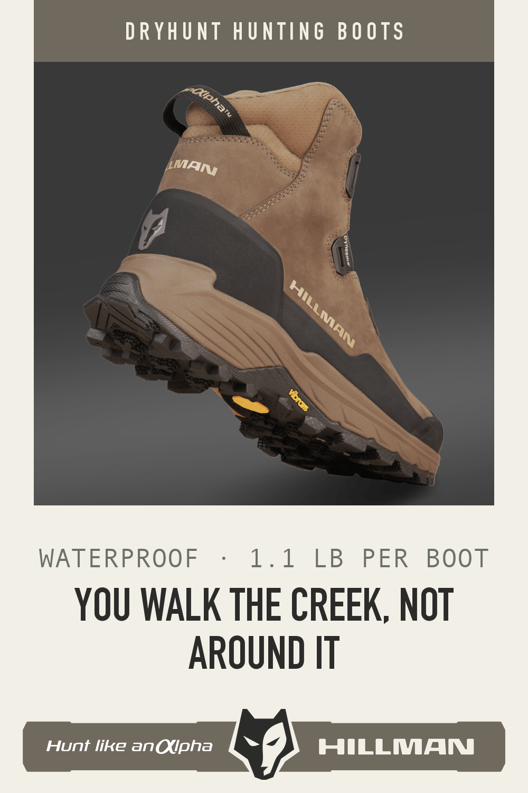
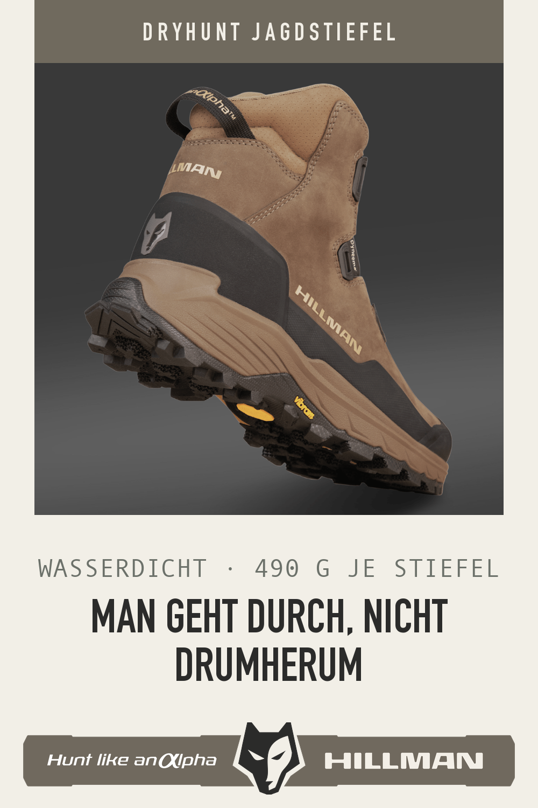
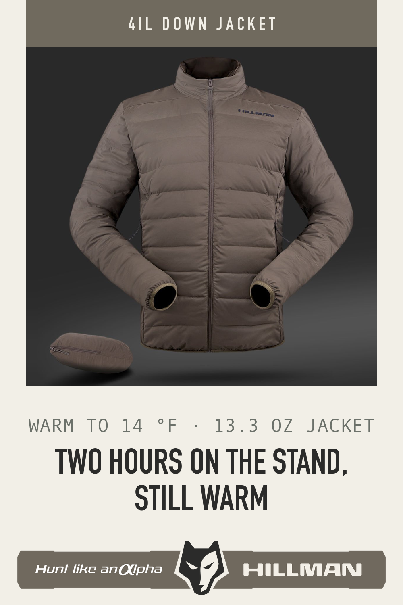
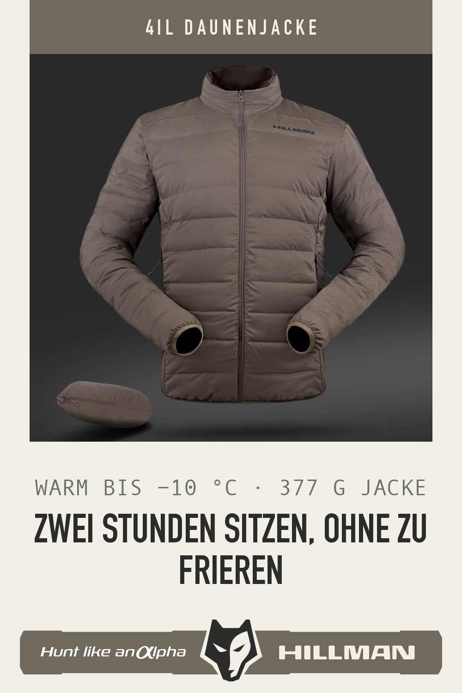
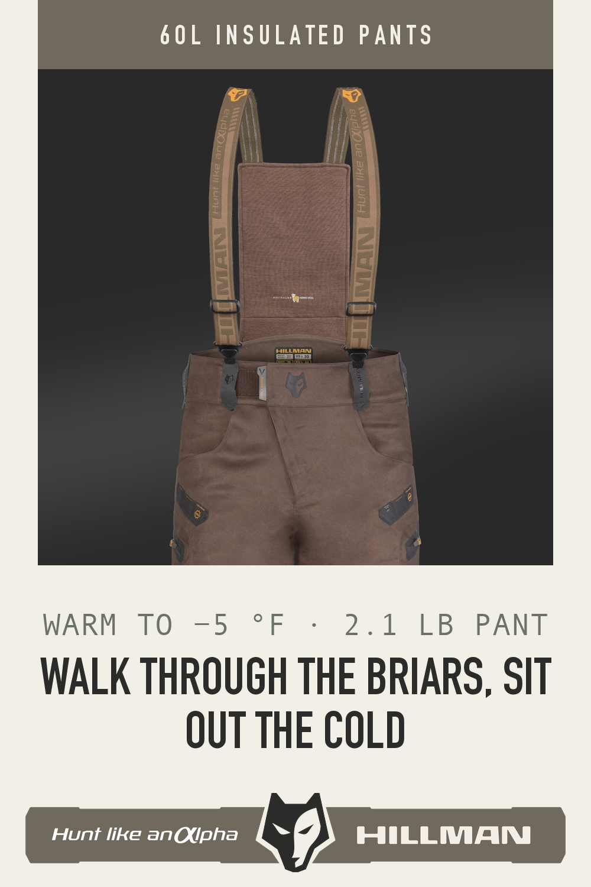
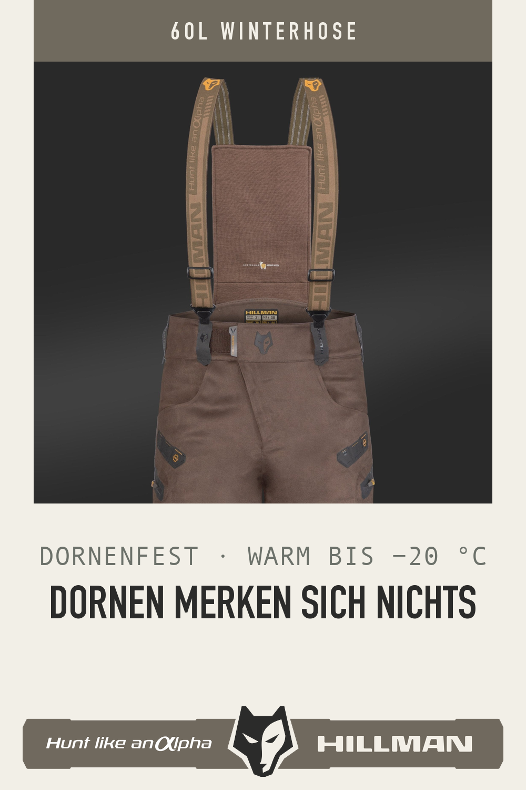
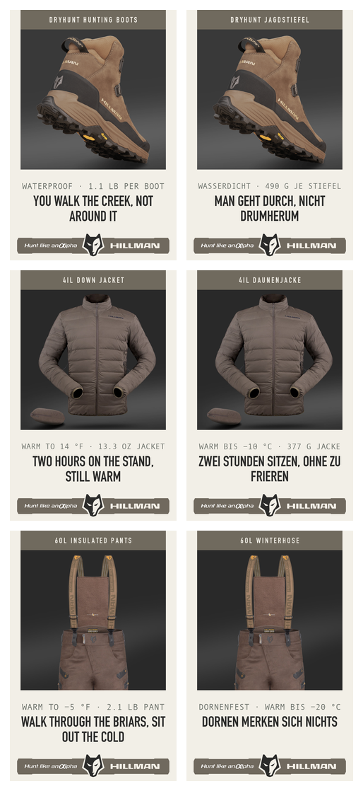

Video stories — corrected V2
6OL Winterhose · Germany
Five distinct real product photographs: worn in context, field use, two construction details and clean product. No single-still zoom.
Alpha DryHunt · United States
Real mud action, protection detail, 36 photographed turntable angles and clean hero. No generated product pixels or trophy imagery.
Olga field film · Germany
Real footage. The implausible North-American-looking deer is removed throughout; dark scenes use Ivan's supplied white-wolf lockup.
Dark-background lockup repairs

Regen field Pin · Germany
Correct white-wolf / white-lettering artwork on the dark plate.

Schlamm field Pin · Germany
Correct white-wolf / white-lettering artwork on the dark plate.
Benefit-led static system
The number on a pin now has to be a reason to buy, not a fact off the page.
The old line read 490 G · 13 CM — both true, neither of them a claim. Each pin below leads
on the driver that the category leaders in that market lead on, with our own verified number
attached to it. Same product, same photograph, same template on both sides: only the market changes.
Re-rendered 03.09.2026, evening: the footer is now Ivan's supplied lockup artwork — the dark-wolf variant on these light cards, the white-wolf variant on every dark scene above. The renderer is told which scene it is building and refuses to ship the wrong wolf polarity.
Boot — Alpha DryHunt

United States
WATERPROOF · 1.1 LB PER BOOT
Waterproof is in the model name at Rocky, LaCrosse and Danner; Kenetrek prints
its 4.2 lbs. Grip (Vibram MEGA GRIP) is the third driver and moves into the description.

Deutschland
WASSERDICHT · 490 G JE STIEFEL
Meindl sells its best-selling model on superleicht, wasserdicht,
atmungsaktiv — weight is the second argument in Germany, not the fourth.
Jacket — 4IL down

United States
WARM TO 14 °F · 13.3 OZ JACKET
KUIU sells down by the ounce (7.9 oz, 8 oz, 16 oz) and Sitka leads on
weather then warmth. Fill power is real but it is a material fact, so it goes in the text.

Deutschland
WARM BIS −10 °C · 377 G JACKE
Härkila prints Isolierungsgewicht in grams and the temperature is what an
Ansitzjäger is buying. Metric only, comma decimals, space before the unit.
Pant — 6OL insulated

United States
WARM TO −5 °F · 2.1 LB PANT
Insulated pants are sold on warmth without bulk; First Lite prints 17 oz on
its award-winning pant, so the pound figure is the proof that it is not a snowsuit.

Deutschland
DORNENFEST · WARM BIS −20 °C
The German buying guides define dornenfest physically — through hip-high
brambles without a thorn reaching the leg — and Pinewood builds a whole line on it.
This is the clearest case of one product needing two different lead benefits.
All six at feed width

236 px — Pinterest's real column
US left, Germany right. If a line cannot be read here it does not exist.
Two drivers per pin, never three: at the 46 px type floor the line holds about thirty
characters, so the third driver is held back for the description rather than shrunk below reading
size. Nothing here is published to Pinterest — these are for approval only.
Previous round: T7 template
fidelity samples (03.09.2026).